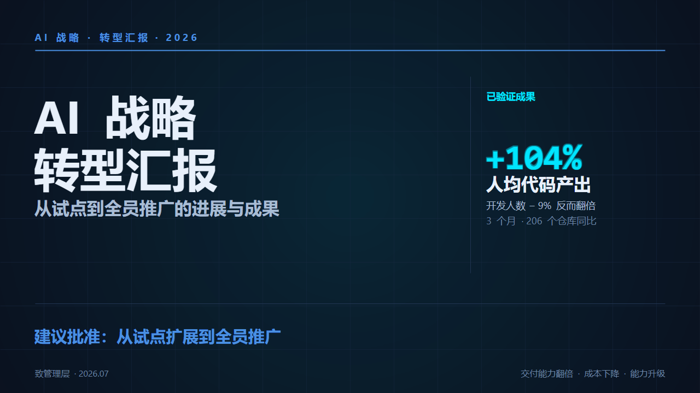

E12 · ppt-master 原生 PPT · 核心段
PPT 类汇报 ·
ppt-master 原生
生成原生可编辑 PPT（不是图片式）
— tutorial E12 / ppt-master 原生 PPT —
E12 · 对比 · 图片式 vs DrawingML
✗
图片式 PPT
整张图 · 不能改
❌ 元素锁死
VS
✓
ppt-master
DrawingML · 每元素可编辑

↑ 真实可编辑 PPT 产出样式
✓ PowerPoint 里改细节
— tutorial E12 / 原生 DrawingML 非图片式 —
E12 · 工作流 · 三步生成
1
AI 生成
Markdown 内容
→
2
ppt-master skill
Claude Code 里调用
→
3
原生 PPTX
可编辑 DrawingML
对它说：用这份汇报内容生成 PPT
— tutorial E12 / Markdown → ppt-master → PPTX —
E12 · 开源资源 · 可参考
一万六千星
开源 · ppt-master
·
二十多套
精美 deck · 可参考
— tutorial E12 / ppt-master 原生 PPT —